Союз ветеранов локальных конфликтов Белоярского ГО
Сергей Викторович Любимов
Председатель общественной организации «Союз ветеранов локальных конфликтов Белоярского ГО» Свердловской области, общественный советник главы Белоярского ГО по вопросам защиты интересов ветеранов и военно-патриотическому воспитанию молодежи
8-908-911-23-05;
e-mail: soyuzVETLOKVBGO@yandex.ru

Общественная организация «Союз ветеранов локальных конфликтов Белоярского ГО» Свердловской области создана на основе совместной деятельности ветеранов РСВА и ветеранов СКР.
Цели «Организации»:
- защита социально-экономических, трудовых, личных прав и законных интересов ветеранов, а также членов их семей в органах Государственной власти, местного самоуправления, общественных объединениях и других организациях в порядке, определённом законодательством РФ;
- содействие привлечению лиц старшего поколения к участию в патриотическом воспитании молодёжи;
- содействие в удовлетворении духовных, нравственных, культурных ценностей ветеранов боевых действий.
Виды деятельности:
- совместно с органами местного самоуправления проводить работу по надлежащему содержанию воинских захоронений, памятников, обелисков, мемориальных досок;
- создавать общественные музеи, комнаты боевой и трудовой славы;
- создавать военно-патриотические клубы, кадетские корпуса, клубы по интересам;
- проводить общественные лекции по правовому, психологическому, медицинскому и другим направлениям, интересующим ветеранов;
- организация культурного досуга ветеранов и вовлечение их в различные виды самодеятельного и прикладного искусства и другие виды общественной деятельности.
В ноябре 2019 года, 8 человек из числа ветеранов Афганистана и Северного Кавказа, собрались за круглым столом и решили: "Союзу быть!" В этот же вечер была создана инициативная группа и поставлены задачи. А если задача есть и она ясна, будьте добры выполнять! Первой и самой основной задачей было поставлено воспитание молодежи в военно-патриотическом плане. И не на бумаге, для отчета, а на деле, чтобы показать остальным (кто не верит в молодежь), что можно и нужно работать в этом направлении. Результаты не заставили себя долго ждать, но это уже совсем другая история. Мы же не стали наслаждаться Победой, а двинулись с новой силой к новым вершинам. Не прекращая военно-патриотическую работу с юнармейцами ветераны решили заявить о себе. Заявить громко и четко, чтобы очнулись бойцы так привыкшие к "гражданке", чтобы увидели все: мы молоды душой, у нас полно сил, море энергии, огромное количество идей, и не просто идей, а идей необходимых всему нашему району. А самое главное - это огромное желание работать. Именно работать! РАБОТАТЬ ВО БЛАГО БУДУЩИХ ПОКОЛЕНИЙ! Но пандемия внесла свои коррективы. Работу с юнармией пришлось временно приостановить, но это не помешало провести празднование 75-летия Великой Победы, с соблюдением всех санитарных норм. Праздник получился ярким, красочным, торжественным!
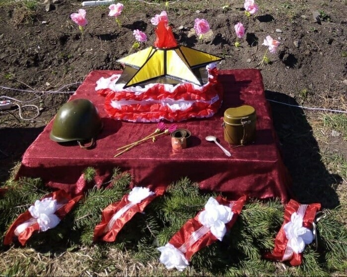Это не осталось незамеченным. Военный комиссар предоставил нам уникальную возможность побывать в качестве почетных гостей на Параде Победы в столице среднего Урала. Это событие не только перевернуло мышление ветеранов, они поверили в себя, поверили в свои силы, осознали свою необходимость, убедились в том, что все их старания, вся их работа видна и оценена руководством.
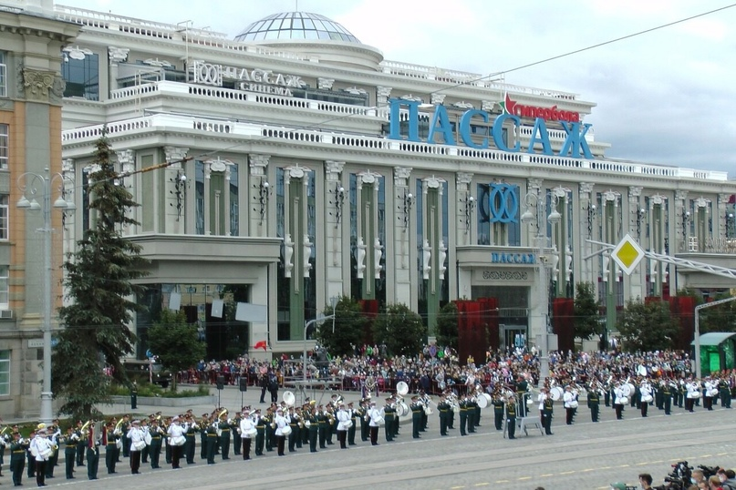 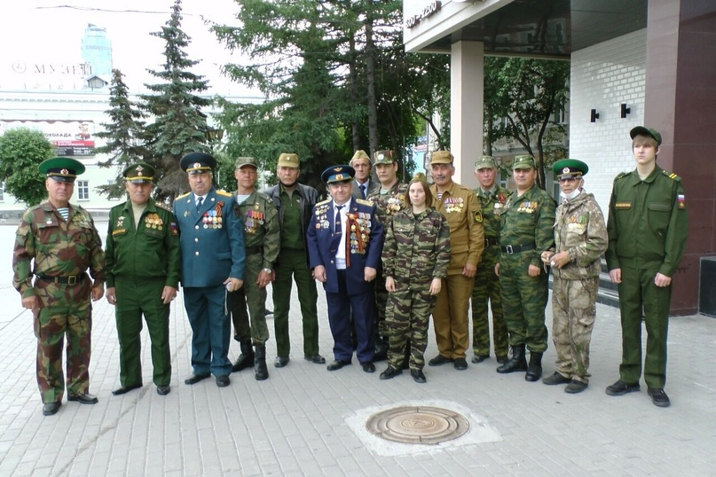 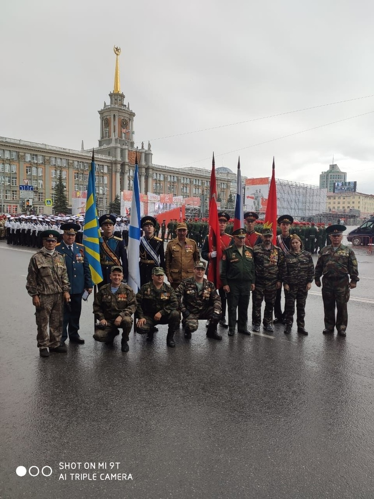 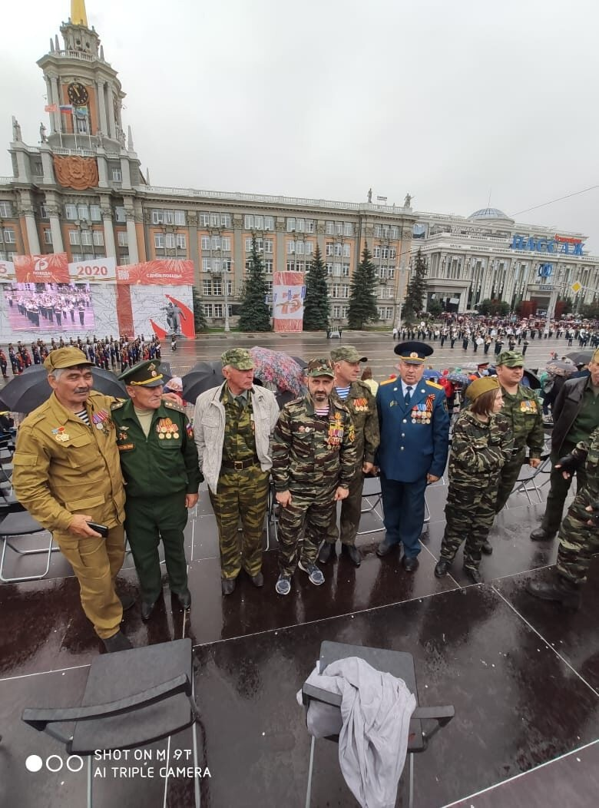 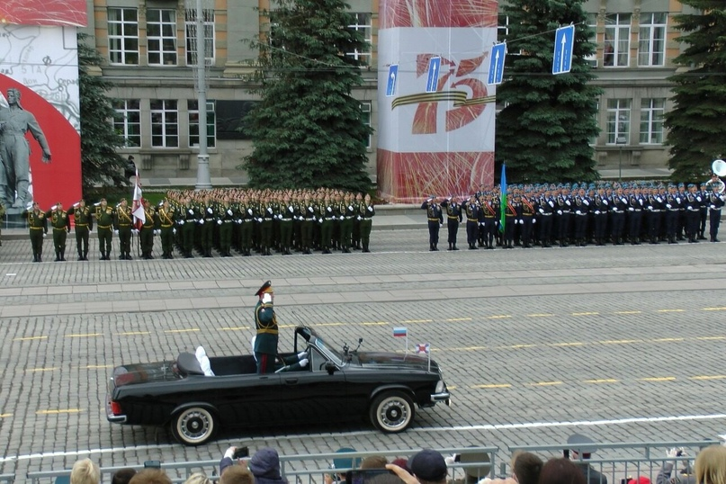После этого значимого события, ряды недавно созданного Союза ветеранов локальных конфликтов пополнились бойцами-ветеранами, которые принесли с собой новые идеи и, как показало время, этим идеям суждено было сбыться и стать частью истории Союза ветеранов локальных конфликтов. Следующей задачей стояло проведение мероприятия «СВЕЧА ПАМЯТИ», посвященное началу Великой отечественной войны. Как и положено, началось мероприятие 22 июня, ровно в 4 часа. Казалось бы, кому хочется вставать в такую рань, да ещё и ехать кому за 10 км, кому за 15 км? Но ведь поехали! Не поленились! Это говорит о том, что у ветеранов появилось чувство долга, чувство товарищества и сплоченности.
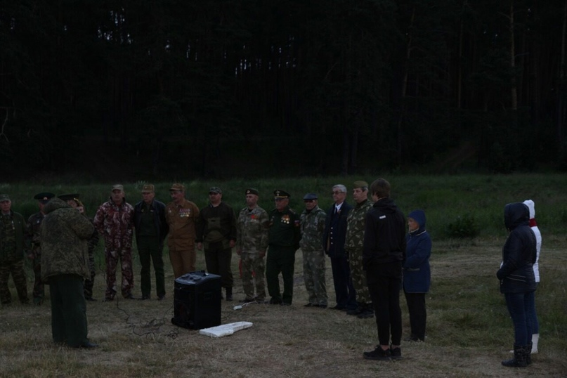 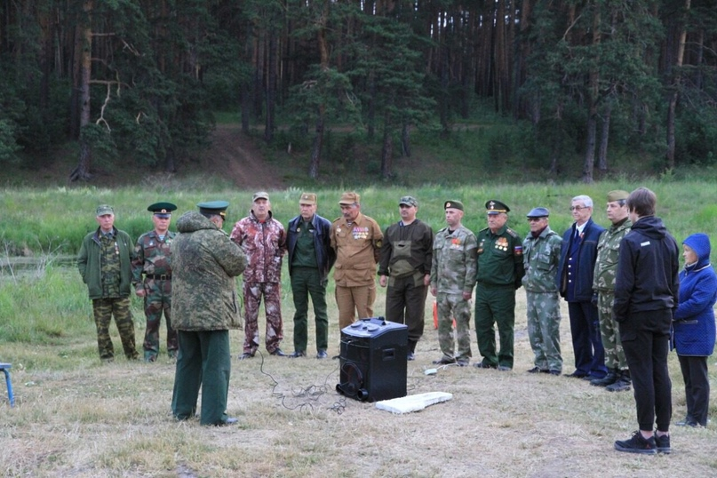 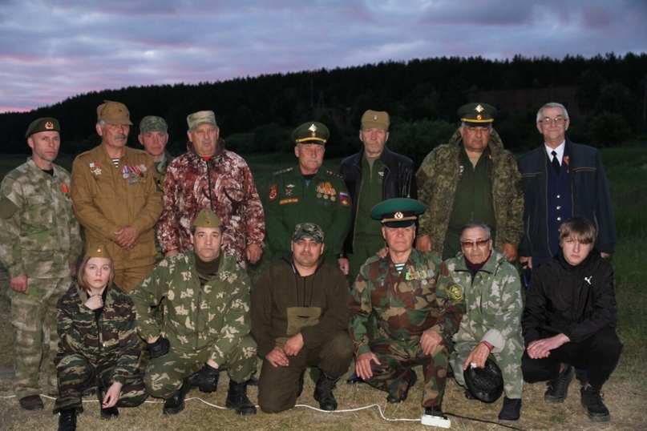 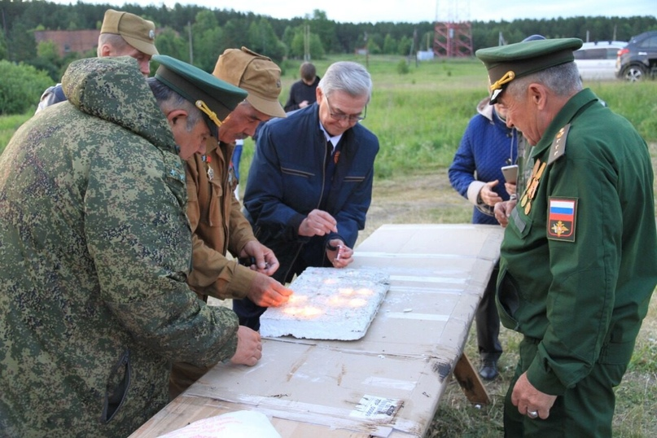 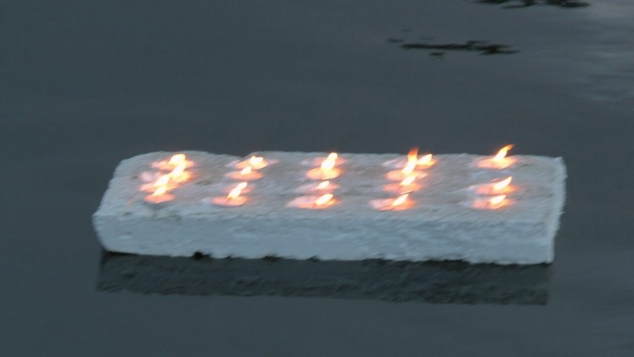И тут появилась новая идея, не входившая в планы организации. То ли не выспались, то ли и правда «утро вечера мудренее», но возникла мысль поставить памятник, в память о всех участниках вооруженных конфликтов в стране и за рубежом после Победы 1945-го года. Решили установить боевую разведывательно-дозорную машину БРДМ—2. Сказано-сделано. Но одно дело сказать, совсем другое воплотить в жизнь. Мысль намертво отложилось в голове каждого. Лето короткое. Решили форсировать. Нашли машину (это тоже другая история), отреставрирована, нашлись спонсоры, настоящие патриоты своей Родины, которые не задумываясь помогали материалами. О них так же в другой рубрике. Работа шла параллельными курсами одновременно. Одни отвечали за постамент, другие за реставрацию, третьи за материалы. Потребовалось всего 40 дней! Через 40 дней памятник встал в строй, рядом с памятником воинам-афганцам и занял своё достойное место на аллее Славы поселка Белоярский!
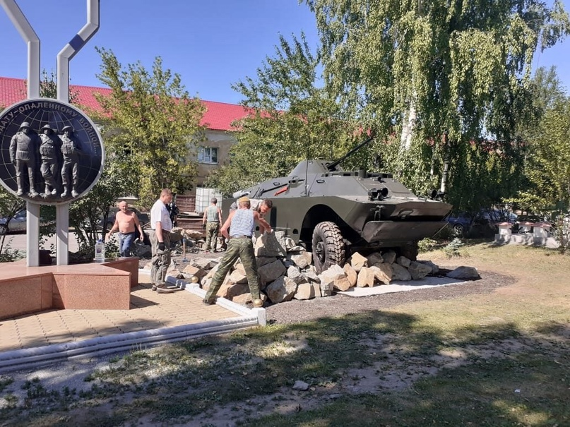 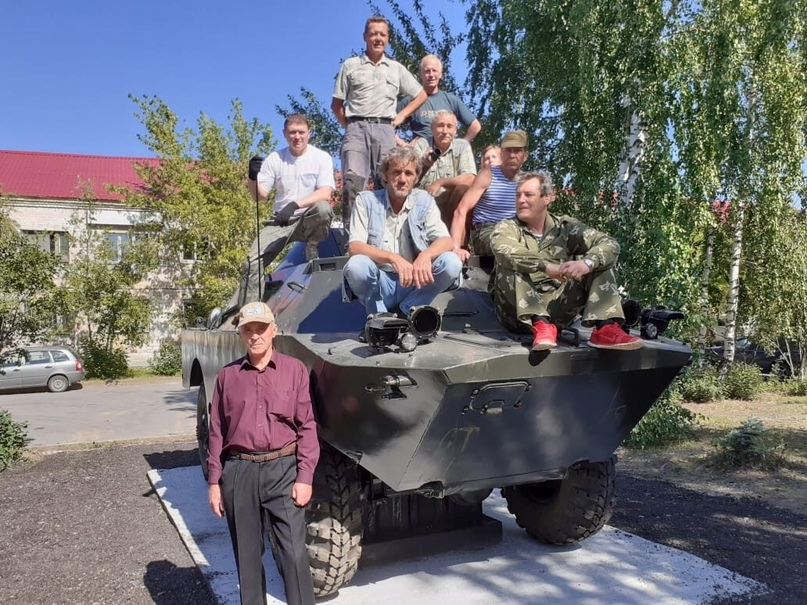 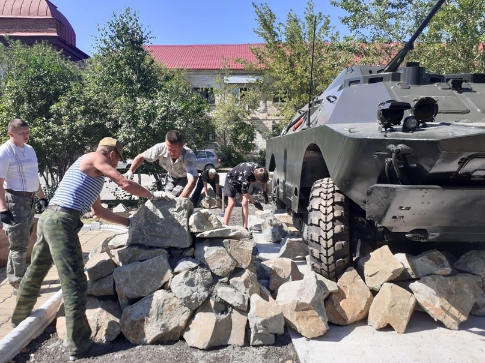 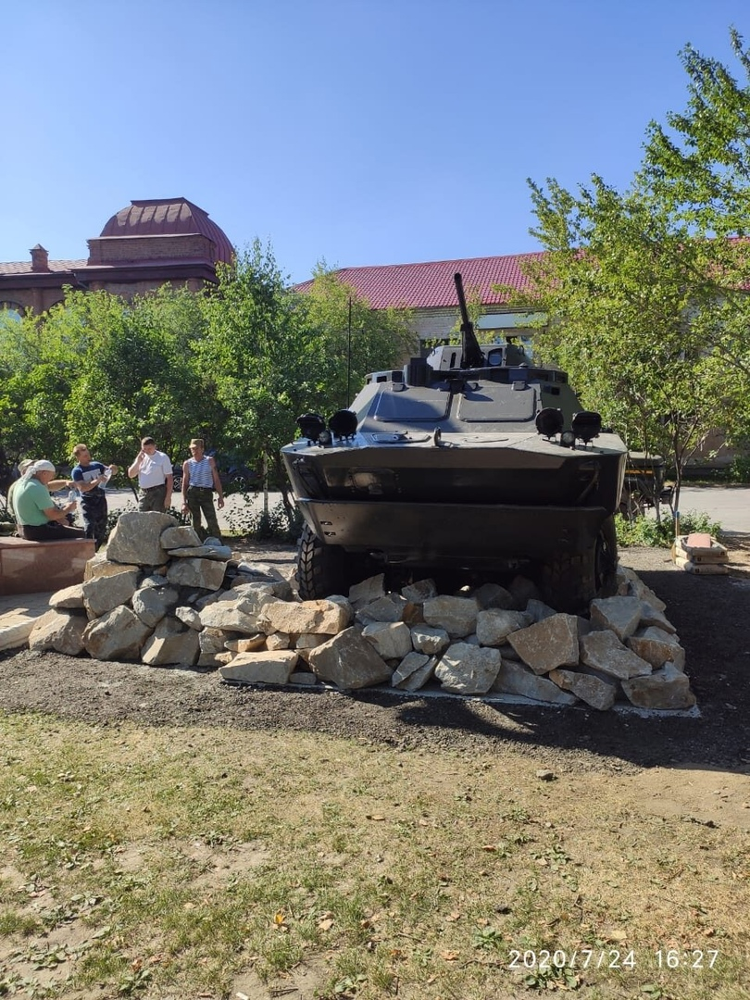 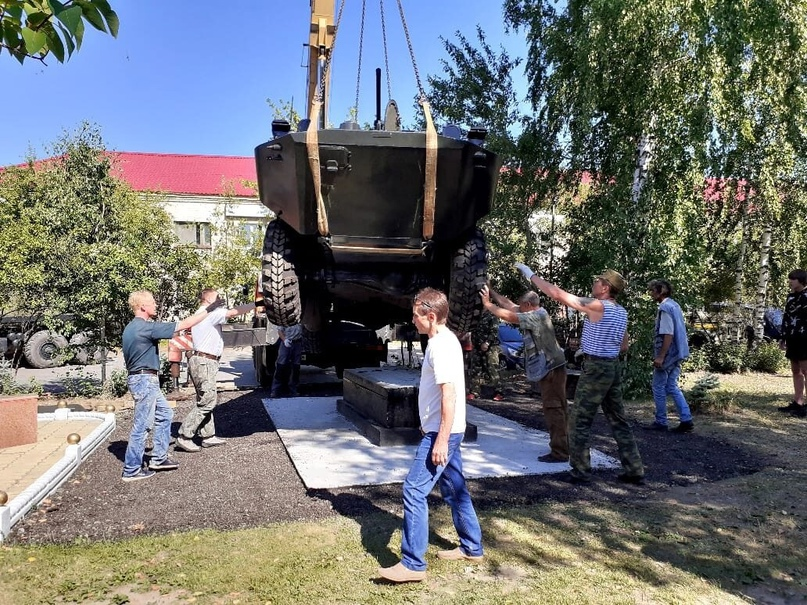 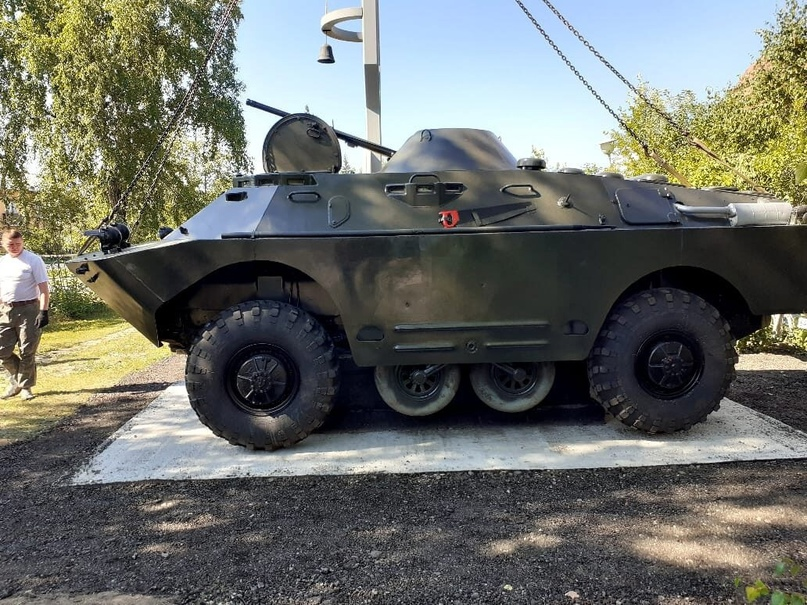 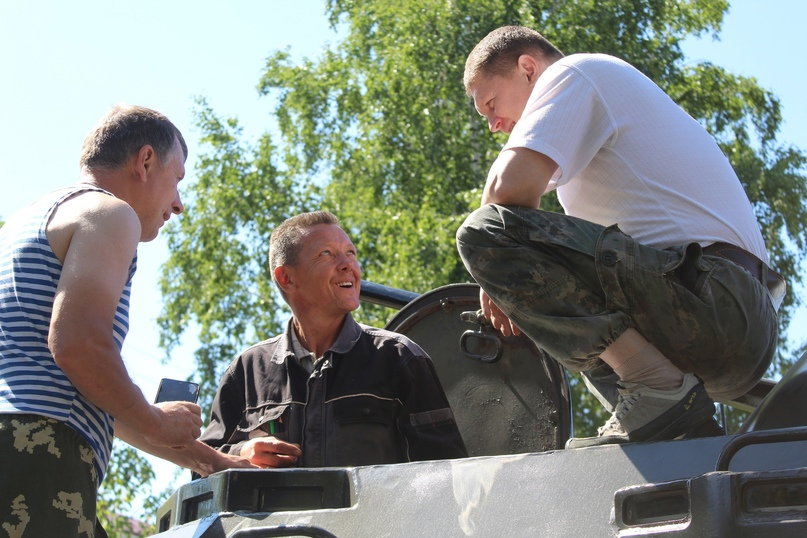Открытие памятника—зто целое событие!Событие уже в масштабах района! На открытие приехали все неравнодушные. Приехали военачальники Центрального военного округа, казачество, генералы МВД. Это событие всколыхнуло не только ветеранов, сидящих в квартирах, но и руководителей Домов культуры, клубов, библиотек с предложениями о проведении тематических вечеров, внеклассных занятий, организации военно—спортивных игр, направленных на улучшение физической формы и патриотической направленности среди молодого населения. В июле был отмечен день ветеранов локальных войн. Не были забыты и женщины. Женам офицеров были вручены памятные награды. Был организован фуршет.
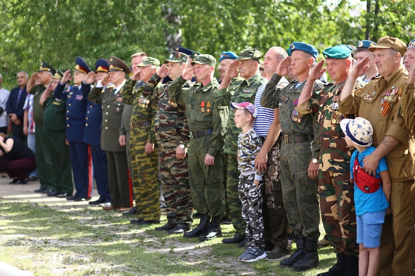 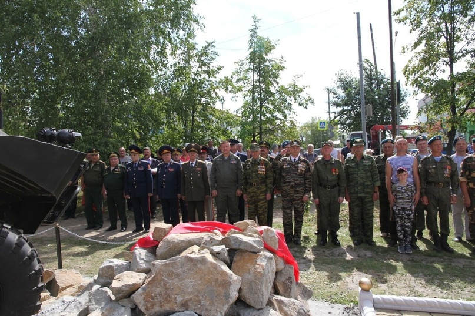 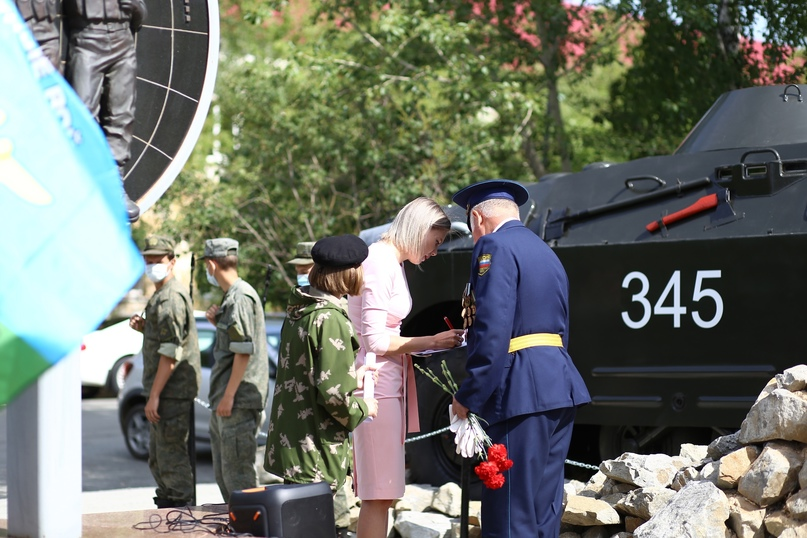